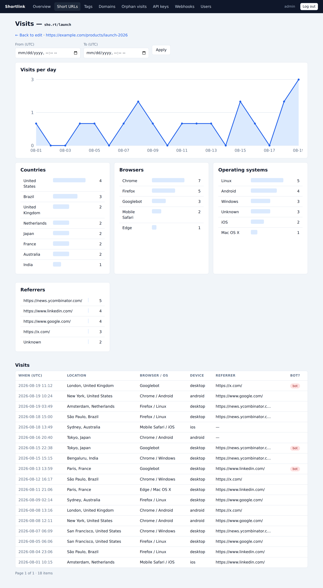

Analytics & tracking
What is recorded

Each redirect records a visit with: timestamp, referrer, user agent (parsed to browser and operating system), device class, bot detection, and — when geolocation is enabled — country, city and coordinates. Analytics pages show a per-day chart, breakdowns by country / browser / OS / referrer, and the raw visit log, all filterable by date range.
Visit data can be queried per short URL, per tag, per domain, or globally — in the dashboard and via the stats endpoints. Visits can also be deleted per link, and orphan visits purged wholesale.
Geolocation
Set SHORTLINK_GEOLITE_LICENSE_KEY (a free
MaxMind GeoLite2 license key)
and the server downloads the city database automatically and refreshes it weekly.
Visits are geolocated in the background, off the redirect path. Without a key,
everything else still works — visits simply have no location.
Privacy controls
| Setting | Effect |
|---|---|
SHORTLINK_ANONYMIZE_IPS=true (default) |
the last IPv4 octet (or IPv6 host bits) is zeroed before storing — country-level geolocation still works |
SHORTLINK_DISABLE_IP_TRACKING=true |
no form of the visitor's IP is ever stored (disables geolocation) |
SHORTLINK_TRACK_SKIP_PARAM=no-track |
requests carrying ?no-track are redirected but not recorded |
SHORTLINK_TRACK_ORPHAN_VISITS=false |
base-URL and 404 traffic is not recorded |
SHORTLINK_DISABLE_TRACKING=true |
no visits are recorded at all (note: max-visit limits then never trigger) |
Bot detection
User agents matching common crawler/bot/CLI patterns (Googlebot, curl, headless
browsers, link preview fetchers, …) are flagged. Bot visits are counted separately
and can be excluded from visit listings with excludeBots=true.
Orphan visits
Hits that didn't resolve to an active link are tracked separately in three classes: base URL (the bare domain), invalid short URL (a code-shaped path that doesn't exist — including expired links), and regular 404 (anything else).